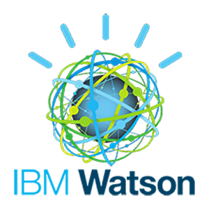

The underlying technology is applicable to so many uses. The gaming industry is producing tools to make user interfaces exciting and interactive, and the potential to apply these interfaces to scientific data sets, research collaborations, and social environments are the dawn of a new age in human-computer interfaces.
Our current projects are listed below
The world leader in graphics and GPU technology. NVidia supplies our deep learning hardware and the graphics cards needed on the client PCs.
The Unity gaming engine is a flexible, extensible resource to create engaging content for a wide variety of platforms.
IBM Watson cloud services provide speech recognition and natural language capabilities to the platform.
Compute Canada provides performant, scalable server resources to host the world servers, deep learning cluster for feature extraction, and to provide storage.
The Modularity Squad, led by Dr. Yvonne Coady, are experts in scalability and containerization of network architectures.
The Victoria Makerspace is home to over 150 makers and technology enthusiasts who form the base of our army of testers and a valuable brainstorming resource.
Meet QVirt founder, Dr. Derek Jacoby

Derek has experience in statistics, bioinformatics, data science, visualization, virtual reality, speech recognition, user experience, and building great teams
Click on a logo to explore Derek's background